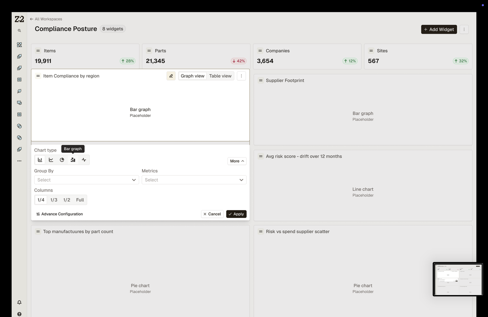
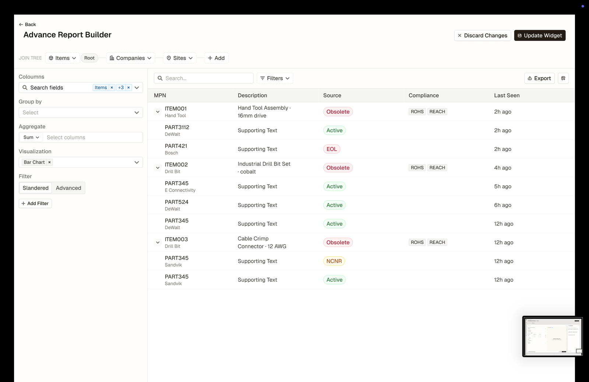
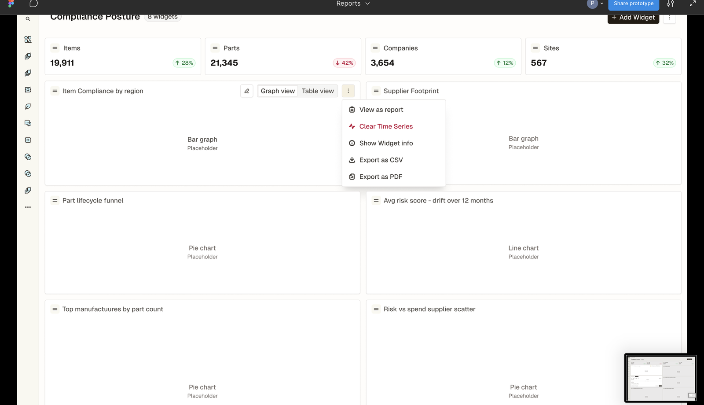
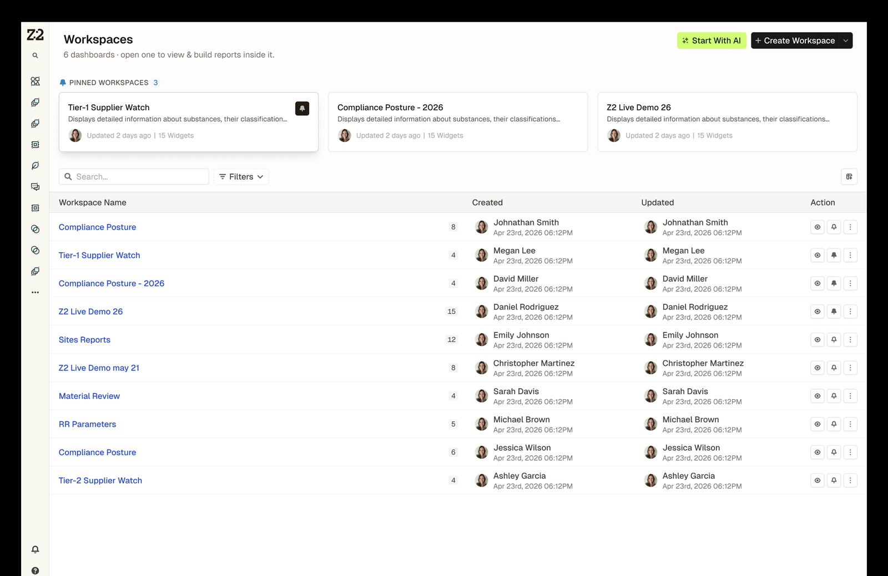
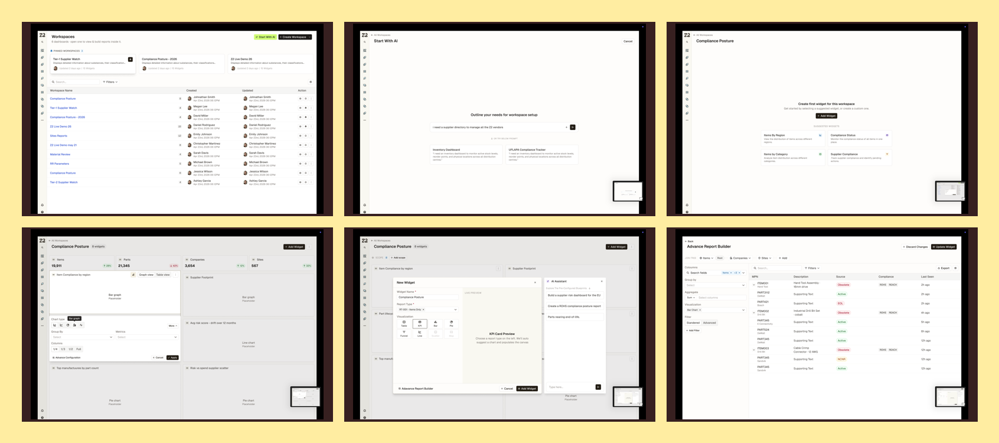

Case Study — Enterprise Reporting
Z2 Enterprise
- [ Company ]
- Z2 Data
- [ Role ]
- UX / UI · Product Design
- [ Tools ]
- Figma, Design Systems
The reporting layer for supply-chain risk
I owned the design of the entire Reports experience for Z2 Enterprise Hub — the enterprise system of record for supply-chain risk & compliance used by teams at Qualcomm, Tesla, Airbus, and Dell. End to end: how teams create a report (blank, from a template, or with AI), build it from configurable widgets on live data, and manage, export, and version it — turning scattered risk and compliance findings into audit-ready evidence.
The Reports Experience
Report Creation
Multiple ways in: start from a blank report, a saved template, or let AI draft one from a prompt. A join-data modal lets teams connect objects and relationships, and scope controls define exactly what each report covers.
Widget Dashboard
Reports are built from configurable widgets — tables, charts, and metrics — with a live preview as you go. I designed the full widget lifecycle: create, update, manage, and export, plus distinct View and Edit modes and a history of every change.
Component System
Built on a reusable component system (down to the TableCell) so dense supply-chain data stays legible and consistent — an accessible, high-contrast UI that holds up across every report and widget.




Process
I designed the module the way it ships — a full Figma system of flows, states, and components, from first inspirations to build-ready specs.

-
01
Inspirations & audit
Studied reporting patterns and audited the existing data model to ground the work in real supply-chain objects.
-
02
Flows & states
Mapped every path — create, join, scope, build, export, history — with hover, empty, and edit states drawn out for handoff.
-
03
Component system
Built reusable widgets and table components (down to the TableCell) so the module scales without redrawing screens.
-
04
Build handoff
Annotated dev-ready specs and partnered with engineering through implementation into the live platform.